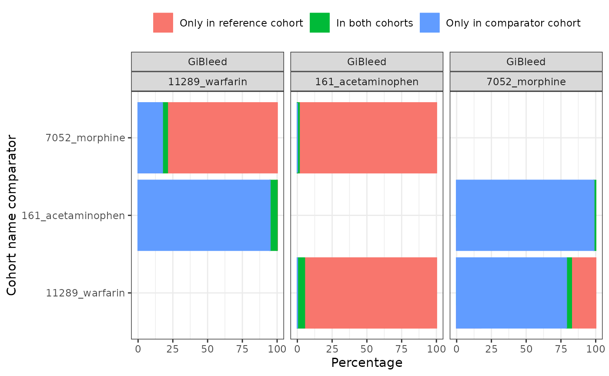
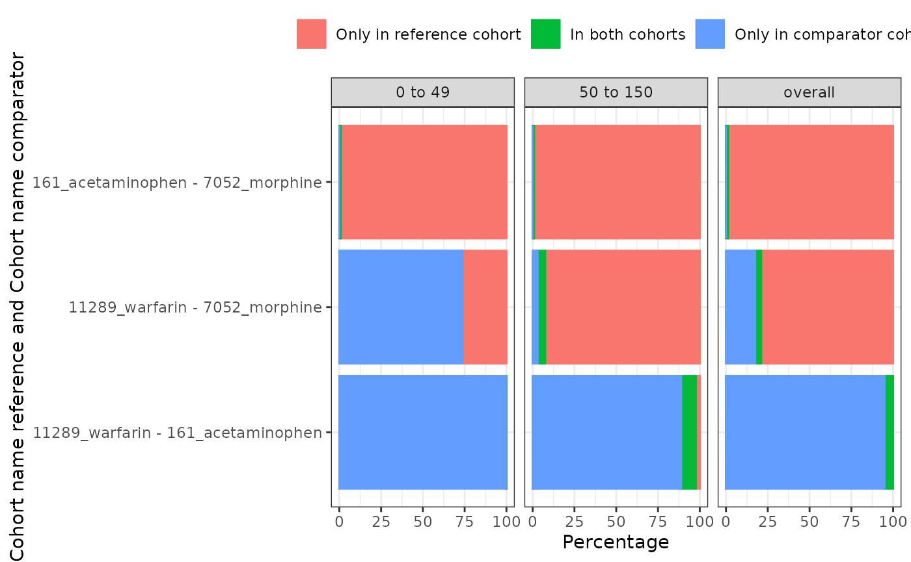

Summarise cohort overlap
Source:vignettes/summarise_cohort_overlap.Rmd
summarise_cohort_overlap.RmdWhen creating multiple cohorts we might be interested in the overlap between them. That is, how many individuals appear in multiple cohorts. CohortCharacteristics provides functions to generate such estimates and then summarise these estimates in tables and plots.
To see how this works let’s create a few medication cohorts with the Eunomia synthetic dataset.
library(omock)
library(CDMConnector)
library(dplyr, warn.conflicts = FALSE)
library(CodelistGenerator)
library(PatientProfiles)
library(CohortCharacteristics)
cdm <- mockCdmFromDataset(datasetName = "GiBleed", source = "duckdb")
medsCs <- getDrugIngredientCodes(
cdm = cdm,
name = c(
"acetaminophen",
"morphine",
"warfarin"
)
)
cdm <- generateConceptCohortSet(
cdm = cdm,
name = "meds",
conceptSet = medsCs,
end = "event_end_date",
limit = "all",
overwrite = TRUE
)
settings(cdm$meds)
#> # A tibble: 3 × 6
#> cohort_definition_id cohort_name limit prior_observation future_observation
#> <int> <chr> <chr> <dbl> <dbl>
#> 1 1 11289_warfarin all 0 0
#> 2 2 161_acetamino… all 0 0
#> 3 3 7052_morphine all 0 0
#> # ℹ 1 more variable: end <chr>
cohortCount(cdm$meds)
#> # A tibble: 3 × 3
#> cohort_definition_id number_records number_subjects
#> <int> <int> <int>
#> 1 1 137 137
#> 2 2 13908 2679
#> 3 3 35 35Now we have our cohorts we can summarise the overlap between them.
medsOverlap <- cdm$meds |>
summariseCohortOverlap()
medsOverlap |>
glimpse()
#> Rows: 36
#> Columns: 13
#> $ result_id <int> 1, 1, 1, 1, 1, 1, 1, 1, 1, 1, 1, 1, 1, 1, 1, 1, 1, 1,…
#> $ cdm_name <chr> "GiBleed", "GiBleed", "GiBleed", "GiBleed", "GiBleed"…
#> $ group_name <chr> "cohort_name_reference &&& cohort_name_comparator", "…
#> $ group_level <chr> "11289_warfarin &&& 161_acetaminophen", "11289_warfar…
#> $ strata_name <chr> "overall", "overall", "overall", "overall", "overall"…
#> $ strata_level <chr> "overall", "overall", "overall", "overall", "overall"…
#> $ variable_name <chr> "Only in reference cohort", "In both cohorts", "Only …
#> $ variable_level <chr> "Subjects", "Subjects", "Subjects", "Subjects", "Subj…
#> $ estimate_name <chr> "count", "count", "count", "count", "count", "count",…
#> $ estimate_type <chr> "integer", "integer", "integer", "integer", "integer"…
#> $ estimate_value <chr> "1", "136", "2543", "131", "6", "29", "2543", "136", …
#> $ additional_name <chr> "overall", "overall", "overall", "overall", "overall"…
#> $ additional_level <chr> "overall", "overall", "overall", "overall", "overall"…We have table and plotting functions to help view our results. The
uniqueCombinations can be use to include/exclude non unique
combinations between the comparator and reference cohorts for the
overlap.
tableCohortOverlap(medsOverlap, uniqueCombinations = FALSE)| Cohort name reference | Cohort name comparator | Estimate name |
Variable name
|
||
|---|---|---|---|---|---|
| Only in reference cohort | In both cohorts | Only in comparator cohort | |||
| GiBleed | |||||
| 11289_warfarin | 161_acetaminophen | N (%) | 1 (0.04%) | 136 (5.07%) | 2,543 (94.89%) |
| 7052_morphine | N (%) | 131 (78.92%) | 6 (3.61%) | 29 (17.47%) | |
| 161_acetaminophen | 11289_warfarin | N (%) | 2,543 (94.89%) | 136 (5.07%) | 1 (0.04%) |
| 7052_morphine | N (%) | 2,644 (98.69%) | 35 (1.31%) | 0 (0.00%) | |
| 7052_morphine | 11289_warfarin | N (%) | 29 (17.47%) | 6 (3.61%) | 131 (78.92%) |
| 161_acetaminophen | N (%) | 0 (0.00%) | 35 (1.31%) | 2,644 (98.69%) | |
plotCohortOverlap(medsOverlap, uniqueCombinations = FALSE)
As well as generating these estimates for cohorts overall, we can also obtain stratified estimates. In this example we’ll add age groups to our cohort table, and then obtain estimates stratified by these groups.
cdm$meds <- cdm$meds |>
addAge(ageGroup = list(c(0, 49), c(50, 150))) |>
compute(temporary = FALSE, name = "meds") |>
newCohortTable()
medsOverlap <- cdm$meds |>
summariseCohortOverlap(strata = list("age_group"))As with our overall results, we can quickly create tables and figures to view our stratified results.
tableCohortOverlap(medsOverlap, uniqueCombinations = FALSE)| Cohort name reference | Cohort name comparator | Age group | Estimate name |
Variable name
|
||
|---|---|---|---|---|---|---|
| Only in reference cohort | In both cohorts | Only in comparator cohort | ||||
| GiBleed | ||||||
| 11289_warfarin | 161_acetaminophen | overall | N (%) | 1 (0.04%) | 136 (5.07%) | 2,543 (94.89%) |
| 7052_morphine | overall | N (%) | 131 (78.92%) | 6 (3.61%) | 29 (17.47%) | |
| 161_acetaminophen | 11289_warfarin | overall | N (%) | 2,543 (94.89%) | 136 (5.07%) | 1 (0.04%) |
| 7052_morphine | overall | N (%) | 2,644 (98.69%) | 35 (1.31%) | 0 (0.00%) | |
| 7052_morphine | 11289_warfarin | overall | N (%) | 29 (17.47%) | 6 (3.61%) | 131 (78.92%) |
| 161_acetaminophen | overall | N (%) | 0 (0.00%) | 35 (1.31%) | 2,644 (98.69%) | |
| 11289_warfarin | 161_acetaminophen | 0 to 49 | N (%) | 1 (0.04%) | 8 (0.30%) | 2,653 (99.66%) |
| 50 to 150 | N (%) | 26 (2.25%) | 102 (8.85%) | 1,025 (88.90%) | ||
| 7052_morphine | 0 to 49 | N (%) | 9 (26.47%) | 0 (0.00%) | 25 (73.53%) | |
| 50 to 150 | N (%) | 122 (92.42%) | 6 (4.55%) | 4 (3.03%) | ||
| 161_acetaminophen | 11289_warfarin | 0 to 49 | N (%) | 2,653 (99.66%) | 8 (0.30%) | 1 (0.04%) |
| 50 to 150 | N (%) | 1,025 (88.90%) | 102 (8.85%) | 26 (2.25%) | ||
| 7052_morphine | 0 to 49 | N (%) | 2,636 (99.06%) | 25 (0.94%) | 0 (0.00%) | |
| 50 to 150 | N (%) | 1,117 (99.11%) | 10 (0.89%) | 0 (0.00%) | ||
| 7052_morphine | 11289_warfarin | 0 to 49 | N (%) | 25 (73.53%) | 0 (0.00%) | 9 (26.47%) |
| 50 to 150 | N (%) | 4 (3.03%) | 6 (4.55%) | 122 (92.42%) | ||
| 161_acetaminophen | 0 to 49 | N (%) | 0 (0.00%) | 25 (0.94%) | 2,636 (99.06%) | |
| 50 to 150 | N (%) | 0 (0.00%) | 10 (0.89%) | 1,117 (99.11%) | ||
plotCohortOverlap(
medsOverlap,
facet = c("age_group"),
uniqueCombinations = TRUE
)